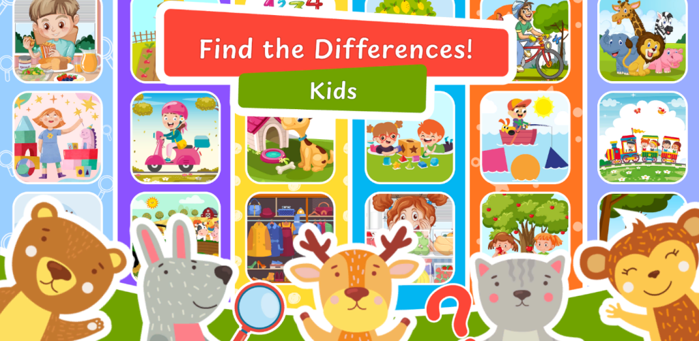
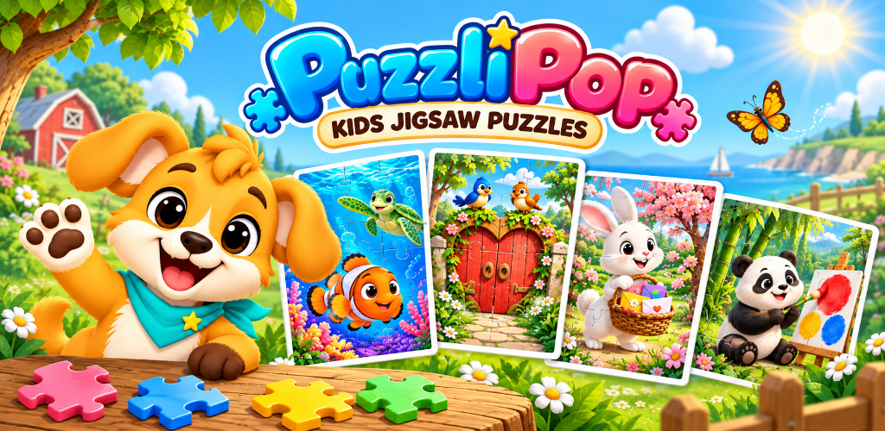
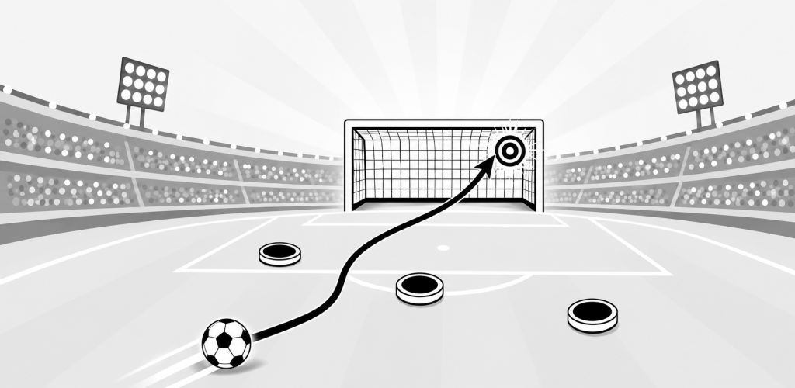
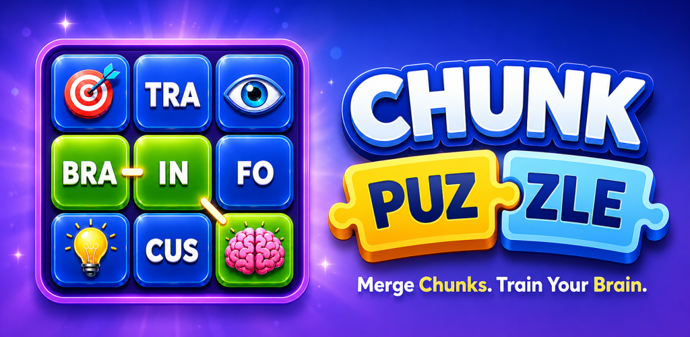
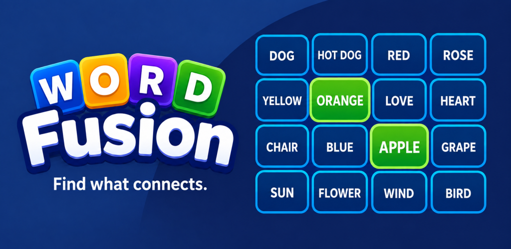

03 / Mobile · Puzzle
Kids Spot the Difference
A colourful puzzle game built around focus, attention and observation.
View project ↗MY PROJECTS
A collection of games I’ve published, projects I’ve worked on and ideas I’ve explored.
These are the mobile games I’ve published under my Fabay Games name. Take a look at their gameplay, design and screenshots.

A colourful puzzle game built around focus, attention and observation.
View project ↗
Fun jigsaw puzzles for kids & toddlers with animals, fruits, shapes and songs.
View project ↗
Aim, shoot and score in quick football challenges built on skill and accuracy.
View project ↗
Connect word pieces, solve relaxing puzzles and give your brain a workout.
View project ↗
Group 4 related words, reveal hidden categories, and discover the Master Word.
View project ↗
An interactive ECG simulation exploring how virtual reality can support medical learning.
View project ↗
A decision-based simulation helping SME managers explore secure digital technology adoption.
View project ↗
Flappy Bird-inspired mechanics meet a risk-and-reward arcade loop.
View project ↗

A physics-based game about turning a boring day at the desk into play.
View project ↗